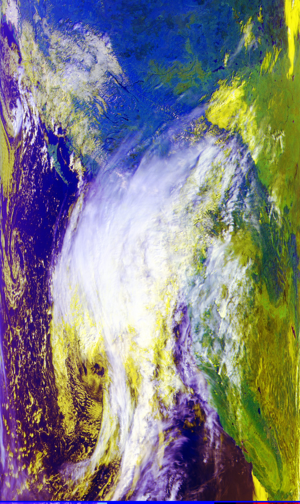
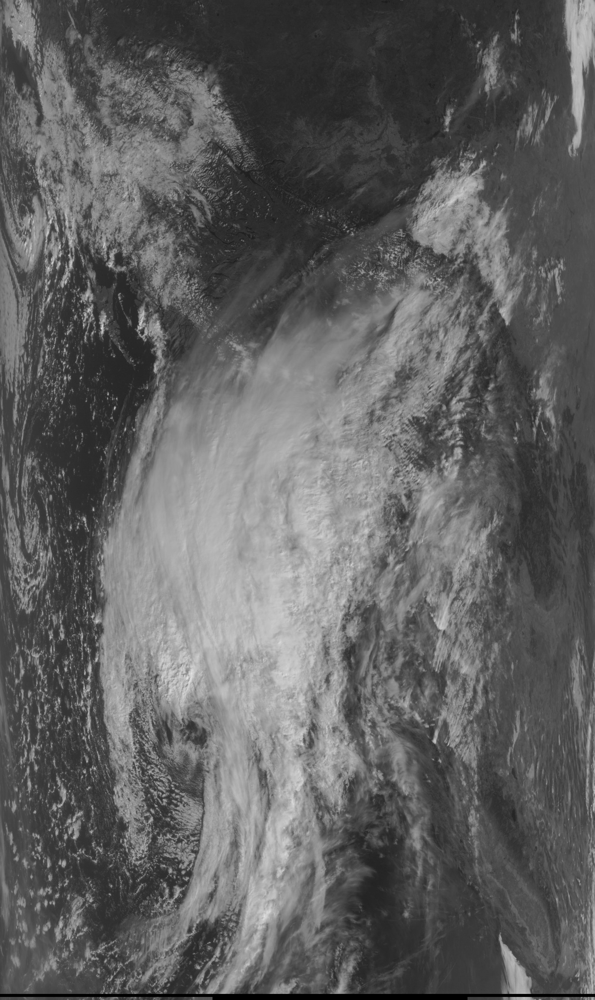
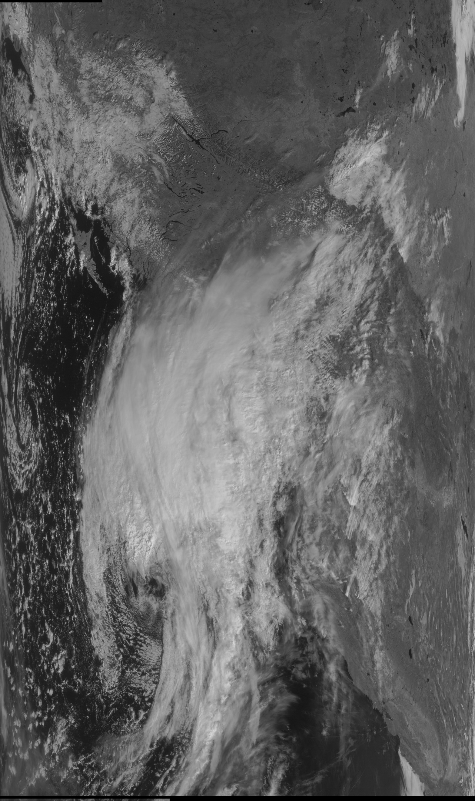
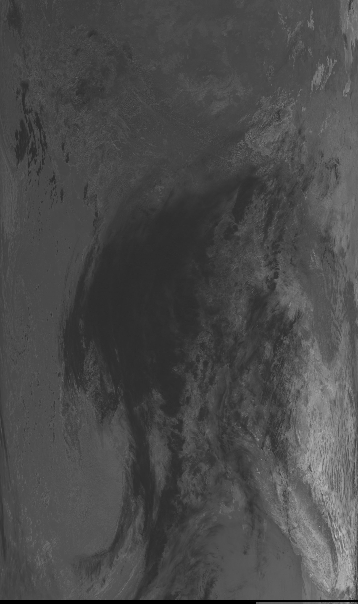

· San Francisco Bay Area
Meteor M2-3:
A Short Pass
Another weather-satellite pass, a clear view of the Pacific coast.
The observation
The next day, I returned to the garden for another pass. This time I received Meteor M2-3, a weather satellite in the same family as M2-4. Its scanner sent image data as it passed over the Pacific coast.
I started recording at 11:02:58 a.m. Pacific daylight time. After about nine minutes, an obstacle blocked the satellite. I stopped the recording because the signal was no longer useful. The file therefore ends before the satellite necessarily went below the horizon.
The image shows the coast and broad cloud fields. Its colors help separate features, but they are false color, not a photograph of what the eye would see.

The setup, briefly
I used a V-shaped dipole on a camera tripod, an SDRplay RSPdx-R2 and a laptop. The SDR recorded the radio signal; SatDump assembled the decoded channels into images. The antenna and workflow are described in the first observation.
| Recording | CS16 I/Q, 2 million complex samples/s; about 9 minutes 24 seconds |
|---|---|
| Tuning | 137.500 MHz recording center; M2-3 signal at 137.900 MHz |
| Recovered images | MSU-MR channels 1, 2 and 4, plus a false-color composite |
For antenna dimensions, software steps and explanations of LRPT, see Meteor M2-4: From Signal to Image.
Watch the radio signal
The one-minute video compresses the recording. The broad bright band around 137.9 MHz is the satellite signal. Its spectrum and waterfall are from the radio recording; the sky track and elevation are predictions for a representative San Francisco point.
Three image channels
Channel 1 is visible light, channel 2 is near infrared, and channel 4 is shortwave infrared around 3.9 µm. The same coastline and clouds appear differently in each. These saved grayscale images are uncalibrated; brightness is not a temperature reading.
{kind=link}

{kind=link}

{kind=link}

Source record: M2-3 evidence guide · WMO satellite entry.